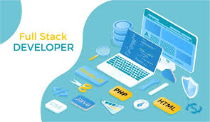

RESEAU INFORMATIQUE
Dans le contexte informatique, un réseau est un ensemble d'ordinateurs, de serveurs et d'autres appareils connectés entre eux pour partager des données, des fichiers ou des ressources (comme internet, imprimantes, etc.).
DEVELOPPEUR AVEC WORDPRESS
Un développeur WordPress est une personne spécialisée dans la création, la personnalisation et la gestion de sites web en utilisant WordPress, un système de gestion de contenu (CMS) très populaire. Il peut créer des thèmes, développer des extensions (plugins) et adapter des fonctionnalités pour répondre aux besoins spécifiques d'un site.

DEVELOPPEUR FULL-STACK
Un développeur full stack est un développeur capable de travailler sur toutes les parties d'une application web : Front-end (ce que voit l'utilisateur, comme le design et l'interface) Back-end (ce qui se passe en coulisses, comme le serveur, la base de données et la logique du site)